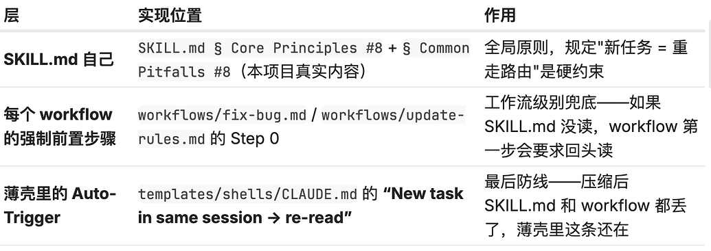
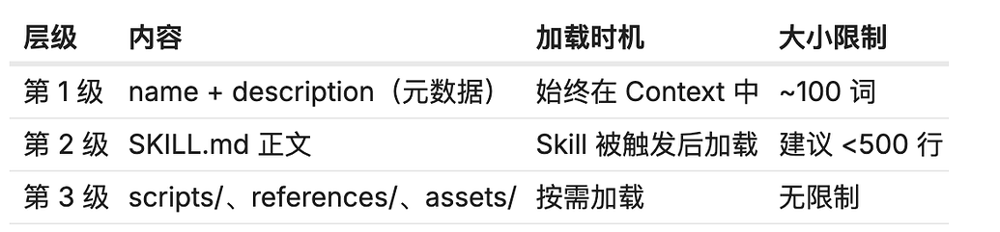

本帖使用社区开源推广，符合推广要求。我申明并遵循社区要求的以下内容：¶
- 我的帖子已经打上 #开源推广 标签： 是
- 我的开源项目完整开源，无未开源部分： 是
- 我的开源项目已链接认可 LINUX DO 社区： 是
- 我帖子内的项目介绍，AI生成、润色内容部分已截图发出： 是
- 以上选择我承诺是永久有效的，接受社区和佬友监督： 是
以下为项目介绍正文内容，AI生成、润色内容已使用截图方式发出
本文已从[开发调优]模块迁移到[文档共建模块],大家可以自行在文档后面进行补充调整
如何写一个好的skill¶
帖子最下面有具体的项目示例,欢迎大家一起提交pr修改
阅读路径¶
全文核心只有三句话,如果理解了,这个文章就没必要看了：
-
结构服务于内容，
-
激活优于存储
-
结构可复用，内容禁止预制
前言:skill的前世今生,我们为什么需要skill¶
[details="agent的流程,skill的作用"]
附图:agent的执行流程

一次 Agent 的执行,背后藏着上图这么多环节。但这套默认流程,不一定贴合我们各自的工作场景——于是 Skill 应运而生。
好奇的佬友可能会冒出一个疑问(真的有吗?):这个领域里意思相近的词其实不少,比如 MCP、RAG,它们和 Skill 到底是什么关系?
其实很简单——这三者的根本目的,都是为了优化上图的执行流程,只是各管一段: RAG 提供了外挂知识库的能力,让 Agent 有据可依、思考更有深度; MCP 赋予了 Agent 探索外部世界的能力; 而 Skill,则更像整个 Agent 流程的大脑,决定它"该怎么做"。
而说到 Skill 的前身,得从去年大火的 Prompt(提示词) 讲起。提示词的作用是什么?说白了,就是规范 Agent 的行为,让它按照特定的流程或规则去完成任务。但是后面我们发现一个提示词适用的场景太单薄了,所以我们将提示词,和他对应的规则(其他md),脚本(sh或者py脚本),各种文档一起打包成一个"能力",这就是skill了.
而skill比起来prompt最优的地方在于他的加载方式: 按需加载/渐进式披露,agent不会每一次都会把skill的全部内容都塞到上下文里面,而是会读skill的description,然后命中,然后才会按需去读,这样不但可以精简上下文,也可以省钱(这才是最重要的!!!)
[/details]
一、skill 的最初形态：一个文件就够了¶
在我们聊"上下文"、"薄壳"、"Harness"这些概念之前，先看看 skill 最开始的样子 —— 一个 markdown 文件，几条行为准则，仅此而已。
参考项目：forrestchang/andrej-karpathy-skills（基于 Andrej Karpathy 总结的 LLM 编码反模式）
[details="单文件 skill 长什么样"]
Andrej Karpathy的整个项目就 6 个文件、859 行。核心是一个 67 行的 SKILL.md，里面只有四条行为准则：
{kind=link}
目录结构就这么简单：
skills/karpathy-guidelines/
└── SKILL.md ← 全部内容都在这里
- 没有
rules/，因为四条准则放在 SKILL.md 里就够了 - 没有
workflows/，因为这个 skill 不绑定特定任务流程 - 没有
references/，因为一个外部链接就够了
这不是偷懒，是对架构复杂度的准确判断：结构服务于内容，而不是用结构撑完整性。
这个项目最重要的地方
设计一：原则 + 检验句，而不是原则 + 解释¶
大多数 skill 里面的规则是这样写的：
保持简洁。 写解决问题所需的最少代码。
Karpathy Skills 的写法是：
简洁优先。 解决问题所需的最少代码，不写投机性的功能。 问自己："资深工程师会觉得这过度复杂吗？" 如果是，就简化。
再看一条：
精准修改。 只改必须改的，只清理你自己造成的乱。 检验标准：每一行改动都应该能直接追溯到用户的请求。
区别在哪？前者是声明 —— 告诉 Agent"应该这样"。后者是检验句 —— 给 Agent 一个可以在执行后自我验证的具体问题。
Agent 在生成代码之后，可以真的去问自己"每一行改动都能追溯到用户的请求吗"，然后根据答案决定要不要回滚某些行。而 "Be Simple" 这种声明，Agent 只能在生成前抽象地"记住"，生成后根本没有钩子去触发验证。
可以直接借鉴的格式：
## 原则名称
一句话描述原则。
检验：[一个可以跑的命令 / 一个可以问自己的具体问题]
设计二：代码行为层面的 ❌/✅ 对比¶
Karpathy Skills 的 EXAMPLES.md 有 522 行，全部是代码级 before/after。关键在于 —— 展示的不是明显的错误（内存泄漏、SQL 注入、死循环），而是看起来合理但时机错了的改动：
请求是"修复空 email 导致的崩溃"：
❌ Agent 实际会做的：
def validate_user(user_data):
+ """Validate user data.""" # 加了 docstring（没被要求）
+ email = user_data.get('email', '').strip()
- if not user_data.get('email'):
+ if not email:
raise ValueError("Email required")
- if '@' not in user_data['email']:
+ if '@' not in email or '.' not in email.split('@')[1]: # "顺手"加强校验
raise ValueError("Invalid email")
+ if len(username) < 3: # 没被要求的 username 校验
+ raise ValueError("Username too short")
✅ 应该只做的改动：
def validate_user(user_data):
- if not user_data.get('email'):
+ email = user_data.get('email', '')
+ if not email or not email.strip():
raise ValueError("Email required")
# 其他代码保持原样
docstring、更严格的邮箱校验、username 长度限制 —— 这种过度设计在agent的开发过程中特别多见。但在一个只需要修 bug 的 PR 里加进去，就是 Surgical Changes 原则的违反。
这类反模式 Agent 最容易踩，因为"看起来都对"。通用的"禁止写烂代码"提示根本拦不住它，因为Agent不知道什么样子是烂代码,必须用真实的例子提醒他。
设计三：按需引入结构复杂度¶
设计 skill 结构前先回答三个问题：
| 问题 | 如果答案是… | 结论 |
|---|---|---|
| 这个 skill 有多少个不同主题的内容？ | 少于 3 个 | 单文件够了 |
| 绑定了多少种任务流程？ | 没有 | 不需要 workflows/ |
| 预期会随项目演进持续更新吗？ | 不会 | 不需要自演化机制 |
三个都是"否" → 单文件 skill 就是最优解。只有出现"是"的时候，才引入对应的目录层级。
按需引入复杂度，不要一开始就摆全套架构。 一上来就搭完整目录（rules/ + workflows/ + references/ + 多 harness 薄壳……）会制造"这个项目很完整"的错觉，但每个子目录里只有一两行占位符，维护成本反而更高。
[/details]
Karpathy Skills 是一个静态的行为提示，不是自我更新的知识系统。它从一开始就知道自己要做什么，所以结构刚好够用。
但一旦出现以下信号之一，单文件就撑不住了：
- 多主题：SKILL.md 开始出现"### X 相关"、"### Y 相关"的分节
- 任务路由：不同类型的任务需要读不同的规则（加 Controller 和修 bug 读的不是同一套）
- 需要沉淀教训：同样的坑第二次踩，但没有地方记录它
- 多人协作 / 多项目复用：规则开始有变体，需要分文件管理 这些信号出现 → 就该进入文件夹化 skill 的阶段。
[details="Agent.md 需要的注意事项(简略版)"] 首先,我们要知道,agent.md最开始的作用是什么,agent.md的作用是“导航和约束”,而不是“知识仓库”,这个也和上面说的渐进式披露一样,
我其实很烦有一些抖音或者b站的博主,纯蹭流量,然后说什么,"最佳实践",还有的博主给你一份几百行的agent.md,我已经不想说了,那么这样会带来什么后果呢? - 上下文会被污染：塞太多历史、细节、一次性说明，会让模型把无关信息也当成当前任务背景，反而更容易误判. - 成本和效率变差：塞每次都加载大量内容，会占用上下文窗口，降低可用于理解代码、错误日志、当前需求的空间. - agent弱智化：文件越大，越可能出现规则冲突以及会让agent变成一个纯工具人,无法工具当前代码来进行真实的判断.
一个好用的 AGENTS.md 更像这样：
你需要知道什么，才能安全开始工作？ 你遇到问题时，该去哪里找更详细的资料？
所以不是不能写多，而是要分层：AGENTS.md 管方向，其他文档管深度。
[/details]
二、将 Skill 文件夹化¶
当单文件撑不住——主题 ≥ 3、任务路由复杂、需要沉淀教训——skill 就该从一个文件裂成一个文件夹。2000 行的 SKILL.md 不是"内容丰富"，是 Agent 每次都要读完整本书。 但是请注意: 每个文件必须有自己独立的“被加载理由”；如果几个文件永远一起加载，它们就应该是一个文件
[details="Skill 不只是一个 Markdown 文件"] Skill 是一个文件夹，可以包含 Markdown、脚本、资产、数据、配置等。Agent 会自主发现和使用其中的所有内容。
把它想成一个小型项目，而不是一份文档。
⚠️ 这个非常重要。 如果是一个很小的 skill，用单文件没问题（见第一章的 Karpathy 例子）；但是博主之前公司有一个 2000 字的md，AI 根本读不到……而且拓展性极差,要了博主半条老命,这也是这篇文章和项目的初衷。
skills/<name>/
├── SKILL.md # 入口：路由表 + 优先级
├── rules/ # 长期约束
├── workflows/ # 步骤流程
├── references/ # 背景资料：架构、坑点、索引
│ └── gotchas.md # 已知的坑（通常是最高价值内容）
├── docs/ # 可选：提示词、报告
└── scripts/ # 可选：辅助脚本、脚手架工具
Skill 文件夹能放什么¶

Anthropic 的关键洞察： 让 Agent 把时间花在组合和编排上，而非从头写样板代码。Skill 文件夹里的脚本和可复用资产会显著降低 Agent 的出错率
[/details]
如果把所有内容都混在一起会怎样？Agent 会在 3000 行约束里翻找检查清单，一个"规则"文件里藏着流程步骤——浪费 token，维护也变噩梦。
[details="文件内容严格分离"]
{kind=link}
边缘情况分类（按形式决定目标，不按内容）¶
有些内容既是解释性的又容易违反（如"输入验证的坑"），按形式决定：
- "你必须做 X"（指令性的） →
rules/ - "小心 X"（警告性的） →
references/gotchas.md - 第 1 步、第 2 步、第 3 步（流程性的） →
workflows/
判断窍门：当迷茫的时候,挠一挠自己的后脑勺问自己: "我能做 X 吗？"→ rules； "这个坑怎么避？"→ references； "我现在该做什么？"→ workflows。
文件大小参考值¶
{kind=link}
一个良好的 skill，如果单个文件太大，不可避免会导致 Agent 无法读到正确的内容；所以在一定情况下自动拆分或合并规则文件是必须的。但也不是一定要触发：如果大于标准但都是同一个模块的，那么也不应该拆分。
行数是信号，不是命令。 超标触发评估，而非自动拆分——同一个模块的内容即使超过 300 行也不应该硬拆。
[/details]
[details="让你的skiil整合到一起,而不是无根的浮萍"]
一个好的 skill 不是“把知识都装进去”，而是告诉 agent：
-
什么时候该用这个 skill 比如用户说哪些关键词、遇到哪些文件类型、出现哪些任务场景时触发。
-
什么时候不该用 这点很重要。否则 skill 会过度触发，把简单问题复杂化。
-
用到哪一步该读什么
SKILL.md最好只是入口和路线图，不要塞满所有细节。
而这些东西,都是靠路由实现的,这个词是我起的名字,总而言之.
路由决定了 skill 是精准工具，还是另一个巨大的 agent.md。
下面就让我介绍一下~~茴香豆的四种写法~~,路由的多种写法
-
首先最基础的是skill里面的description,当然这个只是基础,但是也是最关键的,因为它是 agent 在加载 skill 正文前唯一能看到的判断依据
-
skill内部路由,这个也是在skill内部最简单的写法,你可以写如果怎么样就去看xxxx,也可以写请去读xxx文件,
那么这种方式是否存在什么问题呢?答案是存在的,首先可维护性不高,其次所有的路由都是散列的,缺少一个统一的管理中心,如果文件模块少是没问题的,但是如果一多就会出现或多或少的路由问题,那么是否有一些可能更好的办法呢?如果用户想要创建一个skill,请去看 "创建skill模块". 如果用户想要创建一个skill,请去看 "skill/create-skill.md". -
可以使用一个专门的文件来当做路由文件(实践可以看文章最后的demo项目),这里我先简单介绍一下这个项目的路由设计
首先在这个项目生成的下游skill项目内部,有他自己本身的skill.md,里面介绍了skill内部的分类原则,包括某一层是干什么的,然后在skill根目录建立了一个routing.yaml,在这个专门的文件里面,写了这个skill里面,都要哪些工作流,不同的工作流要被什么名字,要读哪些配置文件,然后在配置文件的文件夹下又有一个index.md,在index.md内部介绍了当前文件夹下每一个文件的功能,markdown流程图如下
flowchart LR
User["用户任务"] --> Skill["SKILL.md<br/>总入口 / 分类原则 / 导航规则"]
Skill --> Routing["routing.yaml<br/>路由清单 / workflow 名称 / required_reads"]
Routing --> W1["workflow A"]
Routing --> W2["workflow B"]
Routing --> W3["workflow C"]
Routing --> Other["other fallback"]
Routing --> Reads["required_reads"]
Reads --> Index["配置目录 index.md<br/>说明目录下每个文件的功能"]
Index --> Ref1["配置文件 / reference 1"]
Index --> Ref2["配置文件 / reference 2"]
Index --> Ref3["配置文件 / reference 3"]
W1 --> Run["执行对应任务流程"]
W2 --> Run
W3 --> Run
Other --> Run
Ref1 --> Run
Ref2 --> Run
Ref3 --> Run
总而言之,言而总之,无论怎么写,过程不重要,重要的是agent能不能找到对应的文件,如果能做到,这就是最佳实践
[/details]
三、让 agent 谦虚而不是过度自信¶
同一会话里用着用着 Agent 突然"变蠢"——明明第一轮还按规则走，第三轮开始凭感觉写代码，读过的 SKILL.md 规则全忘了。这不是模型笨，是你少了一道强制再读的钩子。
[details="过度自信的agent"]
[第 1 轮] 用户："帮我修一下 UserService 里的空指针 bug"
→ Agent 读 SKILL.md
→ 匹配 Common Tasks 的 "Fix bug" 路由
→ 读 rules/coding-standards.md + rules/project-rules.md
→ 按 workflows/fix-bug.md 流程修好 ✓
[第 2 轮] 用户："顺便加个导出 Excel 的接口"
→ Agent："我已经知道这个项目的规则了"
→ 跳过 SKILL.md
→ 直接开写 Controller
问题：
- 新任务匹配的是 "Add Controller" 路由，要读的是 rules/backend-rules.md
- 这个文件里有一条 gotcha："导出接口必须走 async 队列，直接响应会超时"
- Agent 没读到，写了同步接口
- 测试通过（小数据），生产炸（大数据）
- 两小时定位之后发现：规则一直在那里，只是 Agent 没读
为什么跳过了?¶
- 跨任务没重走路由：第 1 轮记住了"Fix bug 路由"，误以为等于"所有任务的路由"
- 上下文可能已悄悄压缩：第 3 轮的时候
/compact早就跑过，SKILL.md 早就不在 context 里了，Agent 只凭残留摘要干活
这不是 skill 内容的问题，是 harness 没给 Agent 重读触发。
三层强制再读（本项目的实际做法）¶
光写一句"请每次重读 SKILL.md"不管用——第一轮能记住，第十轮压缩后指令早就没了。必须结构化地多层冗余：

{kind=link}
为什么要三层冗余？因为每一层都可能被压缩器丢掉，留给你的是下一层。最坏情况下只剩薄壳——这就是为什么第六章说"Red Flags 必须塞进薄壳而不是只写在 workflow 里"。
嘴硬的 Agent¶
光有机制还不够，压力下 Agent 会自己编借口绕过。本项目的 workflows/update-rules.md § Rationalizations to Reject 就是一张从真实失败里抄来的借口表：
例:
{kind=link}
硬约束：这张表只能从真实失败里抄，不能凭空想象。理由在第八章详细讲。
一条原则，一个检验¶
沿用第一章的"原则 + 检验句"格式(强烈建议)：
## Session Discipline（同会话多任务必须重走路由）
每个新任务——即使是同一会话的第 N 轮——必须重读 SKILL.md、重新匹配
Common Tasks 路由、重读该路由列出的所有必读文件。
检验：问自己"这次任务我读的文件和 Common Tasks 里对应路由列的完全一致吗？"
如果有任何差异（少读 / 多读 / 凭记忆），立即回头重走路由。
[/details]
四、skill的三要素¶
你精心写了一份 Prompt，措辞严谨，逻辑清晰，甚至还加了示例。但 Skill 跑起来之后，模型要么"触发不了"，要么"触发了却不按规范做"，要么"今天好用，明天又乱来"。问题出在哪？
如果你想做好一个 AI Skill，你需要同时想清楚三件事：Prompt、Context、Harness。它们分别解决三个完全不同维度的问题，缺任何一个，Skill 都只是"半成品"。
[details="Prompt——定义做什么"] Prompt 是你给模型的指令书。但在 Skill 体系里，Prompt 其实分为两个层次。
层次一：Description（触发描述）¶
非常重要!!! skill里面最重要的就是description了,否则命中都命中不了!!!
description是写在 SKILL.md，是模型判断"要不要调用这个 Skill"的最重要依据。
范例:
---
name: docx-writer
description: >
创建专业 Word 文档。当用户提到 .docx、Word 文档、
报告模板、正式文件时，必须使用此技能，即使用户
没有明确说"帮我做 Word 文档"。
---
反直觉的设计：模型天然倾向 undertrigger（保守激活），所以 description 要主动覆盖用户可能的各种表达方式。
层次二：Body（执行指令）¶
这是 SKILL.md 的正文部分，告诉 Claude 具体怎么执行——步骤顺序、输出格式、注意事项、边界条件。
## 输出格式
始终使用以下模板结构：
# [文档标题]
## 执行摘要
## 关键发现
## 建议与下一步
写好 Body 的三个关键原则：
- 用祈使句，而不是"你应该……"。「读取文件」比「你应该先读取文件」更直接有效。
- 解释"为什么"，而不只是"做什么"。让模型理解背后的逻辑，它才能在边缘情况下做出合理判断。
- 控制长度，SKILL.md 正文建议 500 行以内。超出就拆分为引用文件，按需加载。
[/details]
[details="Context——决定知道多少"] 这是最容易被忽视的一环。
Context 是模型在生成回答时能"看到"的所有信息。你的 Prompt 写得再好，如果模型在执行时"看不到"它，一切都是零。
三级渐进式加载机制¶
Skill 系统用"Progressive Disclosure（渐进式披露）"来管理 Context，分三个层级：

{kind=link}
这个设计解决了一个根本矛盾：信息越多越好，但 Context 窗口是有限的。
解法是：只把"始终需要"的信息放在顶层，把"可能需要"的信息放在引用文件里，让模型在需要时再去读。
典型目录结构¶
my-skill/
├── SKILL.md ← 第 1 + 2 级
└── references/
├── aws.md ← 第 3 级，部署到 AWS 时才读
├── gcp.md ← 第 3 级，部署到 GCP 时才读
└── azure.md ← 第 3 级，部署到 Azure 时才读
agent 只读取当前任务相关的引用文件，而不是把所有内容都塞进 Context。这样既保证了信息完整，又不浪费窗口资源。
Context 设计的三个常见问题¶
- Context 太少：模型看不到规范，行为随意发挥
- Context 太大：超出窗口，后面的指令被静默忽略
- Context 设计混乱：无关信息干扰模型的判断，导致输出不稳定
这也是为什么本项目把 rules / workflows / references 严格分开——不是形式主义，是为了让每个任务只加载最小必要集合。
[/details]
[details="Harness——验证好不好用"]
Harness 是一层常被低估的结构：很多失稳问题的根因不是模型，是 harness 没给它正确的拦截和重试机制。
很多人写完 Skill 就直接上线，出了问题才去猜"是哪里写错了"。Harness 就是让这个过程变得有据可查——你改了什么，变好了还是变差了，一目了然。
对应到 skill 里，Harness 做三件事：¶
1. 结构性拦截（防失控）
Prompt 里写一百遍"必须做 AAR"都会被"就这一次"绕过。结构性拦截需要：
- 薄壳里的 Red Flags STOP 块（见第六章 6.3）—— 把"就这一次跳过"前置拦截
- workflows/update-rules.md 里的 Rationalizations 表（见第八章 8.3）—— 把 Agent 的真实借口抄进文件
- SessionStart hook（见第七章）—— 压缩后自动重新注入 SKILL.md
这三者叠加才能扛住长会话的压力。
2. 自动化验证（防漏项）
templates/skill/scripts/smoke-test.sh 做 48 项自检：结构、行数、占位符残留、路由完整性、Cursor 一致性、薄壳一致性。见第十五章。
人类特别不擅长手动检查 48 项——脚本能抓住 80% 的"遗忘型错误"。
3. 真实压力测试（防纸面合规）
templates/skill/scripts/test-trigger.sh 会从 Common Tasks 里生成真实用户可能说的提示词，用来测 description 的触发率——单独读一遍 SKILL.md 觉得没问题，跑 test-trigger.sh 才发现一半的触发短语命中不了。
跳不过"自己看"这一步。 模型判断不了"读起来顺不顺"，让 AI 自动改 prompt 最后会改成自我安慰。真实输出必须人眼看。
[/details]
{kind=link}
很多开发者把 90% 精力放在 Prompt 上，跑不对又只调 Prompt，从不审视 Context 设计，也没有 Harness 客观衡量"改好了还是改坏了"。
Prompt 定行为，Context 给视野，Harness 做质检。 三者缺一，skill 都只是"半成品"——
- 缺 Prompt → 激活率低 / 行为漂移
- 缺 Context → 规则写了读不到
- 缺 Harness → 今天好用明天乱来，出错也不知道
[/details]
五、SKILL.md：skill的导航中心¶
SKILL.md 不是百科全书，是目录。Agent 每次任务都要读它，所以它必须短、必须只讲"读什么 / 什么时候读"——而不是"这个 skill 有哪些规则"。
[details="SKILL.md 的四个核心板块"] SKILL.md 应该很短（<= 100 行），只负责告诉 Agent 读什么、什么时候读。
---
name: {{NAME}}
description: > (触发条件，见 5.1)
primary: true
---
# {{NAME}}
{{SUMMARY}}
## Always Read ← 每次任务都读（2-3 个文件）
## Session Discipline ← 多任务会话的强制再读（见第三章）
## Common Tasks ← 按任务类型路由
## Known Gotchas ← 最关键坑点 + 指向 references/gotchas.md
## Core Principles ← 项目特有原则（每条带 ✓ Check）
一个 skill 里面的文件最重要的是什么呢？name？version？description？还是下面的内容？ —— 答案一定是 description。
Description = 触发条件¶
description 字段是 Agent 决定"要不要激活这个 Skill"的依据。它不是摘要，是触发条件。
# ❌ 错误 —— Agent 无法匹配
description: API development helper
# ✅ 正确 —— 明确触发短语 + 激活条件
description: >
This skill should be used when the user asks to "add a new API endpoint",
"write controller logic", "fix a backend bug", or "add a database migration".
Activate when the task involves REST routes, request validation,
service layer logic, or MyBatis mapper changes.
质量检查：
{kind=link}
一个 Description 写不好的 Skill，等同于不存在。
⚠️ 如果你有 Cursor 注册入口 .cursor/skills/<name>/SKILL.md,它的 description 必须和主 SKILL.md 完全一致。否则两边漂移 = Cursor 用一套判据,其它 harness 用另一套,激活随机化。
两层路由：Always Read + Common Tasks¶
第一层 —— Always Read（每次任务都读，2–3 个文件封顶）：
## Always Read
1. `rules/project-rules.md`
2. `rules/coding-standards.md`
第二层 —— Common Tasks（按任务类型路由）：
## Common Tasks
- Add Controller → read `rules/backend-rules.md` + follow `workflows/add-controller.md`
- Fix bug → read task-relevant `rules/*.md` + follow `workflows/fix-bug.md`; ref: `references/gotchas.md`
- Multi-subtask / long autonomous run (≥ 3 independent subtasks) → follow `workflows/subagent-driven.md`
- **Other / unlisted task** → read `rules/project-rules.md` + `rules/coding-standards.md`, then match by workflow filename. If no match, proceed with Always Read rules.
规则：
- 每条必须列精确文件路径，不能只写 "follow the workflow"
- Common Tasks 控制在 5–10 条；超出按领域分组（frontend tasks / backend tasks / ops tasks）
- 必须有 "Other / unlisted task" 兜底条目——没兜底 = 不在列表里的任务 Agent 会乱跑
- 必须有 multi-subtask 路由指向 workflows/subagent-driven.md（见第九章）
Known Gotchas：最高价值板块¶
-
Filter 必须在 app init 之前注册，否则首次渲染空白 → see
references/gotchas.md#filter-registration -
弹窗内 Tabs + service 只打首层接口 → see
references/gotchas.md#nested-service-tabs
**为什么坑点的一句话要上 SKILL.md，详细要放 references？** 因为坑点是"价值密度最高 / 阅读成本最高"的内容——全量放 SKILL.md 会把路由中心变成坑点百科，全量放 references 又会让 Agent 在任务路径上看不到它。**一句话 + 锚点**是最佳平衡：Agent 每次都看得到哪些坑存在，真的踩到才 deep read。
**硬约束**（本项目 `SKILL.md § Core Principles #13` "激活优于存储"）：
> 坑点只躺在 `references/` 里不算"捕获"——它必须同时出现在 Agent 的任务路径上（workflow 的完成检查 / SKILL.md 的 Known Gotchas / rules 摘要）。
这一条在第十章"录入知识库"里会详细讲。
[/details]
---
## 六、跨工具兼容的基石:薄壳
> 一个 skill 怎么在 Claude Code / Cursor / Codex / Gemini 等多种工具里生效？答案不是把 SKILL.md 复制 N 份，而是在每个工具的"入口文件"里放一层**薄壳（thin shell）**，把路由表内联进去
[details="薄壳与跨工具兼容"]
Agent 长对话会压缩上下文,"去 scan `skills/*/SKILL.md`" 这种自然语言指令压缩后会丢。**薄壳的作用就是把路由表内联进每个 harness 的入口文件,压缩后仍然活着。**
### 为什么不能只靠 "去读 skills/*/SKILL.md"
先看一个真实的失败场景：
> **场景**：用户在 CLAUDE.md 里写了一句"formal docs live under `skills/`, read `skills/*/SKILL.md` first"。对话进行到第 40 轮，Claude Code 触发 `/compact`，上下文被压缩成摘要。接下来用户开启新任务"加个分页功能"，Agent 根据摘要里残留的模糊记忆直接写代码——**SKILL.md 已经不在上下文里了，Always Read 的规则全部丢失，任务路由没有匹配**。
**根因**：自然语言指令（"去读 X"）在上下文压缩时被当成普通描述丢掉；但**结构化的表格、清单**会被保留更多。
**薄壳的核心设计**：不写"去读 SKILL.md"，而是**把最小可执行路由表直接内联**到入口文件里——压缩后表格依然在，Agent 拿到新任务时可以当场查表。
### 各工具入口

**缺哪个入口，那个工具就完全看不见你的 skill。
### 薄壳的三块核心内容（≤ 60 行）
每个薄壳由三块组成，缺一不可。下面以本项目为例
```md
# CLAUDE.md
Formal docs live under `skills/`. Read `skills/*/SKILL.md` — default to
`primary: true` skill; only switch when task clearly matches another.
## Quick Routing (survives context truncation)
| Task | Required reads | Workflow |
|------|---------------|----------|
| Fix bug | `rules/project-rules.md` + `rules/coding-standards.md` | `workflows/fix-bug.md` |
| Multi-subtask / long run (≥ 3 independent subtasks) | `rules/project-rules.md` | `workflows/subagent-driven.md` |
| <!-- FILL: task --> | <!-- FILL: `rules/<x>.md` --> | <!-- FILL: `workflows/<y>.md` --> |
| Other | `rules/project-rules.md` | Check `workflows/` for closest match |
## Auto-Triggers
- **New task in same session** → re-read `skills/{{NAME}}/SKILL.md`, re-match
Common Tasks route, re-read all required files. "I already read it" is not
valid — context compresses, routes differ.
- Before declaring any non-trivial task complete → run Task Closure Protocol
(see `skills/{{NAME}}/workflows/update-rules.md`)
- Skip only for: formatting-only, comment-only, dependency-version-only,
behavior-preserving refactors
## Red Flags — STOP
"Just this once I'll skip the AAR" → stop. See
`skills/{{NAME}}/workflows/update-rules.md` § Rationalizations to Reject.
三块各自的作用：
-
Quick Routing——Task / Required reads / Workflow 三列，必须有兜底行
Other和多子任务行。压缩后这张表是 Agent 查找"这次任务该读哪些文件"的唯一线索。 -
Auto-Triggers——事件→动作映射。最关键的是第一条 "New task in same session → re-read SKILL.md"（Session Discipline）：多任务会话里 Agent 常靠"我前面读过了"的残缺记忆继续干活，这一条强制每次新任务重新路由。
-
Red Flags — STOP——把"就这一次跳过 AAR"这类借口前置拦截。Karpathy Skills 没有这一块；我们加它是因为压缩后只有薄壳会留下，Red Flags 是最后一道防线。
反例：soft-pointer-only 薄壳为什么会坏事¶
❌ 常见的错误写法：
# CLAUDE.md
Please read skills/my-skill/SKILL.md before starting any task. It has all
the rules and workflows you need.
这种写法在短会话里能工作。但长会话里：
/compact后，"Please read skills/..." 这句自然语言会被摘要掉- Agent 看到新任务，没有路由表可查，直接凭感觉动手
- 用户察觉不到——输出看起来合理，只是少了 Always Read 的约束
✅ 正确的做法就是 上面提到的的三块模板——路由表、Auto-Triggers、Red Flags 都是结构化内容，压缩器会保留更多。用通俗的话来说,多让Agent后面多自己提到,而不是仅仅靠上下文来维护内容
[/details]
七、对抗 Agent 失控的两道防线¶
第六章的薄壳扛住了"压缩后 SKILL.md 消失"的 80% 场景，但还有 20%：
/clear直接把 context 擦干净，薄壳也得从磁盘重读。这时候需要 hook 来自动帮 Agent 把 SKILL.md 塞回来。
Hook 就是两道机制级护栏,不是靠 Agent 自觉,是客户端在调用工具前后物理地拦一刀:
SessionStart Hook —— 防遗忘(上下文压缩后自动把 SKILL.md 塞回去)
PreToolUse Hook —— 防违规(Agent 要编辑核心规则文件前,先过一道闸)
[details="SessionStart Hook —— 对抗上下文压缩"]
借鉴 obra/superpowers。
Claude Code / Cursor 会在几种情况触发 context 清理：

失忆之后 Agent 开始"合理地"走偏——没有 Always Read 约束、没有 Common Tasks 路由、没有 Known Gotchas——但是输出看起来仍然像那么回事，用户察觉不到。
解决：hook 在三个事件上自动重注 SKILL.md¶
SessionStart hook 监听 startup | clear | compact 三个事件，在事件触发时自动读取 SKILL.md 并注入 context。Agent 下一轮回答看到的就是完整的 SKILL.md，不用等用户手动 @SKILL.md。
本项目 templates/hooks/ 已经备好了三个文件：

脚本内部只做三件事：
# 1. 定位 SKILL.md（支持多 skill 项目）
skill_md=$(find skills/*/SKILL.md | head -1)
# 2. 读文件内容 + JSON escape
content=$(jq -Rs . < "$skill_md")
# 3. 按 harness 输出不同字段名
case "$HARNESS" in
claude-code) echo "{\"hookSpecificOutput\": ...}";;
cursor) echo "{\"additional_context\": ...}";;
*) echo "{\"additionalContext\": ...}";; # fallback
esac
- 替 Agent 执行 Always Read 里的文件（那是 Agent 拿到 SKILL.md 后的责任）
- 自动触发 Task Closure Protocol（那是第八章的事）
- 在会话中途检测 "Agent 已经走偏" 并纠正（那是第三章薄壳 Auto-Triggers 的事）
所以正确的分工： - 第三章的 Session Discipline → 多任务会话里的重读触发 - 第六章的薄壳 Auto-Triggers → 压缩后仍能看到的路由兜底 - 第七章的 SessionStart hook → 清空 / 压缩事件发生后的自动补弹
三者叠加才能扛住长会话 + 多任务 + 多次 compact 的真实工作流。
[/details]
[details="PreToolUse Gate —— 对抗约定失守"]
我用10 个对抗性 prompt 测 Haiku 4.5 和 Sonnet 4.6 的遵守情况

根因:模型的注意力方向是"回答用户的请求",不是"遵守规则"。当用户说"我 leader 让我加"或"demo 5 分钟后要用",模型更倾向于帮用户,而不是帮规则。
做法:PreToolUse 闸拦在 Edit 之前
当 Agent 要对核心规则文件（比如 agent-behavior.md）做 Write/Edit 时,hook 脚本先拿到调用参数,自己判断要不要放行:
# agent-behavior-gate.sh 核心逻辑（简化）
if [[ 编辑会让文件变长 && (超出上限 || 没有 AAR 证据) ]]; then
echo "BLOCKED: 超过 100 行 / 没有 behavior-failures 证据" >&2
exit 2 # ← 关键：非 0 退出码让 Claude Code 直接取消这次 Edit
fi
exit 0 # 放行
[/details]
所以这两道 hook 不是重复,是接力。前者保证信息能进去,后者保证读到了也跑不掉。
但是hook只能一定程度的避免这个问题,同时也面临一个很严肃的问题,对于低智模型来说,就是会有很多情况读不到,哪怕加了hook也不太行,但是太多的hook,其实一定程度反而会限制agent的发挥,所以还是建议用sonnet及以上,而不要用haiku处理一些复杂问题
八、完整的任务闭环¶
Agent 经常把"主体代码写完 + 测试通过"当作"任务完成"。但真实的任务结束还差一步：扫一遍刚才的工作，有没有踩到新坑、发现新规则、暴露已有规则的漏洞。这一步不是可选的 polish，它是任务定义的一部分。
[details="如何做到任务闭环"]
8.1 协议定义（本项目 workflows/update-rules.md）¶
一个任务在以下条件全部满足前不算完成：
1. 主体工作完成并验证（代码跑通、测试通过、功能交付）
2. 30 秒 AAR 扫描（4 个问题 —— 全部"否"则到此结束）
3. 如果任何一个"是" → 通过录入标准 → 通过则记录
任何 workflow 不得在跳过第 2 步的情况下声明"完成"。
8.2 AAR 的 4 个问题（30 秒扫完）¶
- [ ] 新模式？ —— 用了未记录的模式或约定吗？
- [ ] 新陷阱？ —— 遇到了不提前知道就会浪费大量时间的问题吗？
- [ ] 缺失规则？ —— 因为缺少某条规则导致走了弯路吗？
- [ ] 过时规则？ —— 发现现有规则已经不准确或不再适用吗？
触发门槛：判据从"行为变化"改成"非琐碎任务"——后者更容易正确判断。跳过条件窄且明确：仅格式化、仅注释、仅依赖版本变更、无新教训的重构。
8.3 Rationalizations to Reject：从真实失败抄来的借口表¶
光定义协议不够——压力下 Agent 会自己生成借口绕过。理论上应该维护一张原话捕获的借口表：

硬约束：这张表只能从真实失败里加行，禁止凭空扩写。
为什么这么严？因为凭空想象出来的借口 Agent 不会真的说——它真实的借口往往更狡猾、更具体、更贴近当前场景。把真实借口和虚构借口混在一起，压力值就被稀释了，Agent 下次用稍微变形的借口就能绕过去。
8.4 Red Flags — STOP¶
以下任何一条出现，立刻停下，不要自我协商：
- 发现自己在想"这次 AAR 就算了"
- 任务声明"完成"但没跑 30 秒扫描
- 把 gotcha 写进了 reference，但没更新对应 workflow 的完成清单
- 修了同一类 bug 第二次，但规则文件没动过
这些 Red Flags 必须同时出现在薄壳里（第六章 6.3）——压缩后 workflow 文件读不到，薄壳是最后一道防线。
借口表不是凭空增长的，是被失败喂大的。 这正是第四章讲"Harness 做质检"的具体落地方式——压力测试抓到的借口是 harness 的诊断输出，Red Flags 和借口表是 harness 的拦截器。
[/details]
九、多子agent保证主agent纯净¶
主 Agent 的上下文越用越脏——前面的 debug 日志、中间的探索、后面的实现全堆在一起，第 50 轮的时候它连自己最初的任务目标都模糊了。解法是把独立子任务派给干净上下文的 worker，worker 做完退出，主 Agent 只看最终产物。
[details="Subagent-Driven Development —— 多子任务场景"]
这是 Superpowers 最重要的一个结构性发明:不是一个大 Agent 从头做到尾,而是每个独立子任务派一个新的子 Agent,带着干净的上下文窗口进来,做完就退出。 我们似乎也可以借鉴一部分来完成我们的skill
核心思想： 不是一个大 Agent 从头做到尾，而是每个独立子任务派一个新的子 Agent，带着干净的上下文窗口进来，做完就退出。收益：
- 主 Agent 的上下文永远干净
- 主 Agent 兼 reviewer，所有 worker 产物都过它审核
- 可以自主跑几小时不偏离原计划——因为每个 worker 只看合约，不看历史
什么时候启用¶
满足任意一条： - 子任务 ≥ 3 个且互相独立 - 单任务会吃掉 > 30% 剩余 context - 任务是"探索 + 实现 + review"混合形态 - 即将多小时自动运行 都不满足就直接内联做——派发有开销（写合约、开 worker、review），小任务不划算。
Harness 兼容性¶
只有 Claude Code 有原生 Task 工具。Cursor / Codex / Gemini / Copilot 只能降级:在单上下文里按 checklist 模拟,或每个子任务手动开新会话。降级模式仍然有价值——两阶段 review + 合约本身就能捕获大部分 drive-by 缺陷,只是跳过"字面派发"。
四阶段流程¶
- Plan —— 写完整任务清单，每条是一份子任务合约
- Dispatch —— 每份合约开一个干净 worker，合约原文作 prompt，不带主对话历史；无依赖就并行派
- 两阶段 Review ——
- Stage A 查 spec 合规（Outputs 文件、Forbidden Zones、Acceptance 命令、是否有 drive-by 改动）
- Stage B 查质量（代码、gotcha、AAR、Recording Threshold）
- Merge 或 Reject —— 两个 stage 都过才 merge。Stage A 不过就重派，不要在主上下文里内联补 —— 那正好把主上下文污染回去
子任务合约:五个字段¶
## Goal <!-- 一句话,面向结果 -->
## Inputs <!-- worker 允许读的确切文件 -->
## Outputs <!-- worker 必须产出/修改的确切文件 -->
## Forbidden Zones <!-- 不许碰的文件/目录/副作用,不确定默认禁 -->
## Acceptance Criteria <!-- 可机械验证的命令,如 `yarn tsc --noEmit` -->
规则:任何字段不能空;Goal 面向结果不微管步骤;Acceptance 必须是可执行检查,不是散文;worker 不得改合约——合约错了是主 Agent 重写重派。
完整模板见 templates/protocol-blocks/subagent-contract.md。
禁止项¶
- 递归派发(worker 不能再开 worker)
- 让 worker review 自己的产物
- 中途往 worker 上下文塞"澄清"(合约错了就取消重写)
- 跳过 Stage A 只跑 Stage B,或反之
- "worker 基本对了,剩下 10% 我在主上下文补" —— 这是最常见的借口,也是最污染主上下文的动作。重派更紧的合约
[/details]
十、录入知识库,让skill越来越聪明¶
第八章的 AAR 扫描出来"这是个新坑 / 新规则"之后，下一步是决定要不要记、记到哪里、怎么写。这三步都有硬约束——随便记就会把 skill 变成冗长的日记本。
[details="录入标准、泛化规则、激活优于存储"]
一个好的 skill 必须既会记录又会筛选——这个模块决定了 skill 能不能随项目自动进化。
这个模块决定了一个skill是否有了自动进化的能力
Recording Threshold（2/3 录入标准）¶
不是所有发现都值得记录。录入前通过阈值过滤：

至少 2/3 通过才录入。
通过阈值的典型内容¶
- 框架生命周期坑（注册时序、挂载 / 卸载陷阱）
- 隐藏的路由依赖（注册顺序有影响）
- 非显而易见的同步或状态重置要求
- 跨层交互陷阱（对话框 + Tab + 嵌套服务）
不通过的典型内容¶
- 一次性变通方案（只和当前 bug 相关）
- 看代码就能明白的事情
- 轻微的风格偏好
- 官方文档已充分覆盖的内容
实战示例¶
Agent 完成任务：添加了一个新页面，用到 Recoil atom + 自定义 filter。
发现 1：Atom 命名约定（xxxAtom）
可重复？ 是 → 通过
代价高？ 否（命名不一致不会导致错误）→ 不通过
代码不可见？否（现有 atom 已经清晰展示了模式）→ 不通过
结果：1/3 → 不录入
发现 2：Filter 必须在 app init 之前注册
可重复？ 是 → 通过
代价高？ 是（首次渲染空白，30+ 分钟调试）→ 通过
代码不可见？是（时序依赖从代码中看不出来）→ 通过
结果：3/3 → 录入
Generalization Rule(泛化规则)¶
记录的内容必须脱离当前项目上下文也能看懂。
好坏对比¶

改写公式¶
具体发现 → 抽象为通用 pattern → 说明不遵守的后果
录入位置¶

录入格式选最轻的： 一句话 bullet → 一小段加到现有文件 → 新文件（通常不需要）。
激活优于存储¶
一个陷阱仅记录在 references/ 中是不够的。高代价陷阱必须同时:
- 存储在正确的文件中
- 激活在会触发它的任务路径上（workflow 检查项、SKILL.md 的 Known Gotchas、或 rules 摘要）
判断方法："下次 Agent 走正常任务路径时，会自然读到这条经验吗？" —— 不会，就只是"记下来了"，还没有"生效"。
[/details]
十一、自我删除与迭代¶
只增不减的规则文档会变成屎山——3 个月前的坑现在已经不存在，但规则还挂在 rules/ 里误导新 Agent。skill 必须学会"忘记"，而且这件事本身就需要一个 workflow。
[details="错误学习与规则清退"]
Learn from Mistakes¶
Agent 犯错并被纠正后:
- 先搜索 — 确认规则是否已存在
- 分类根因:
- 规则缺失 → 通过录入标准后新增
- 规则过时 → 直接更新(无需门槛——过时规则比缺失规则更有害)
- 规则废弃 → 走清退流程
- 规则未被遵循 → 检查醒目度(可能需要从 references 上浮到 SKILL.md 的 Known Gotchas 或薄壳)
Rule Deprecation¶
规则只增不减会导致文档膨胀。清退条件:
- 相关技术已移除 → 直接删除整条规则
- 正在迁移中 → 加作用域标注（"仅适用于 legacy 模块"）
- 不确定还有没有用 → 加
<!-- DEPRECATED: reason, date -->注释，保留 1 个迭代周期再删
[/details]
[details="自维护机制"]
评估式拆分¶
文件超标时回答三个问题:
- 话题可分离?
- 导航困难?
- 拆后各部分能独立存在? 三个都 Yes → 拆。任何一个 No → 不拆。
评估式合并¶
碎片文件过多时: 1. 话题相关? 2. 合并后更好找? 3. 合并后不超标? 三个都 Yes → 合并。
定期 drift 检查¶
用两个真实不同类型的项目跑同一套 Quick Start（比如 Go CLI + Next.js site），diff -r 对比结果：
- 骨架文件（shells、hooks、protocol-blocks）应该几乎一样 —— 对了，这是预期
rules/coding-standards.md、gotchas.md、SKILL.md的 Common Tasks 应该完全不同 —— 如果一样，说明模板越界了，把项目特定内容固化成了默认值
drift 检查的结果要记进 ANTI-TEMPLATES.md 的 Homogeneity Drift Log，这是反漂移的主要证据。
[/details]
十二、来自各方大佬的建议¶
前面各章讲的都是"怎么组织 skill"——这一章是"写 skill 内容时的基本功"。四条原则，每一条违反都能让一个结构良好的 skill 变成废纸。
[details="来自 Anthropic 的建议"]
不要陈述显而易见的事情¶
我们应该着重注意项目特有的约定、与主流做法不同的地方、Agent 默认行为会出错的场景。 通用编程知识（比如"SQL 注入是坏事"）不需要写进 Skill——模型已经知道了，写了只是浪费 token。
判断标准："资深开发者第一次看你的项目，什么会让他踩坑？" 那个东西才值得写。
避免过度指令化¶
提供约束和上下文，不要把每一步都写死。
❌ 过度指令化：
添加按钮时使用 Tailwind class "bg-blue-500 hover:bg-blue-700..."
✅ 约束 + 上下文：
按钮使用项目的设计系统 token（见 `rules/frontend-rules.md`）。
交互元素必须有可见的 hover / focus 状态。
为什么？过度指令化会让 skill 在设计系统升级后全部失效——你换了一套 token 命名，几百条硬编码的 class 全要改。给约束而不给具体值，skill 能多活过几次重构。
利用脚本和代码库¶
Agent 调用已有脚本比从头写样板代码可靠得多。本项目的 templates/skill/scripts/smoke-test.sh 就是这个思路的产物——不是让每个下游项目自己写验证逻辑，而是共享一个 48 项自检脚本。
判断标准："这段代码会在多少次任务里被 Agent 重写？" 超过 2 次 → 写成脚本；2 次以内 → 内联。
保持 Skill 聚焦¶
一个想做所有事的 Skill 什么都做不好。需要拆分的信号：
- Description 列了 10+ 个来自不同领域的触发短语
- Common Tasks 有 15+ 条覆盖不相关的工作
- Agent 经常为只涉及一个子领域的任务激活整个 Skill
拆分路径：见本项目 references/layout.md § Multi-Skill Projects——什么时候一个 skill 该裂成两个、怎么处理公共内容。
Skill 也是代码，需要测试和迭代¶
- 写 Skill —— 触发条件 + 路由
- 测试激活 ——
test-trigger.sh验证 description 命中率（见第十五章） - 测试路由 —— 每种任务类型读对了文件吗？
- 压力测试 —— 时间压力 / 规则冲突 / 模糊 spec 下跑任务，逐字抓借口（见第八章）
- 观察失败 —— Agent 在哪里仍然出错？
- 通过 AAR 更新 —— 用 Task Closure Protocol 改进 Skill（见第八章 8.5）
步骤 4-6 正是第四章讲的 Harness 要做的事——没有这一层，skill 永远停在"纸面合规"
[/details]
十三、一个skill干一个事情¶
当一个项目有多个 skill（比如
skills/frontend/+skills/backend/+skills/ops/），Agent 怎么知道该激活哪个？两个 skill 有冲突规则怎么办？这些问题不解决，多 skill 架构会比单 skill 更乱。
[details="如何保证skill直接不互相冲突呢?"]
不要在github上拉非常多的同类skill!!!不要在github上拉非常多的同类skill!!!不要在github上拉非常多的同类skill!!! 否则冲突是一定会出现的,可能暂时没有什么更好的解决方案,博主强烈建议使用少而精的skill,同时claude官网也说明过,建议使用自动触发的方式,而不是主动引用skill来调用,太多的skill,只会让正确命中率越来越低
一般来说,存在下面五条硬约束¶
- 独立入口 —— 每个 Skill 有自己的 SKILL.md，不共用
- 注册 —— 每个 Skill 都需要
.cursor/skills/<name>/SKILL.md注册入口，缺一个 Cursor 就看不见 - 优先级 —— SKILL.md frontmatter 里用
primary: true标记默认 skill；任务明确属于某个 Skill 时，该 Skill 的规则优先 - 共享规则 —— 跨 Skill 的通用约定放
skills/shared/，各 Skill 的 Always Read 指向它 - 不要强行合并 —— 不同领域保持独立更清晰，合并只会让 description 变成"什么都能触发的万金油"
什么时候该裂成多 skill¶
信号：
- 两个领域的 Common Tasks 完全不相交（frontend 任务不读 backend 规则，反之亦然）
- description 要列 10+ 个跨领域触发短语
- gotchas 文件按领域自然分成两半
这时候 skills/<one>/ 拆成 skills/frontend/ + skills/backend/ 是对的——SKILL.md 各自 ≤ 100 行、description 各自精准、Agent 激活的是"正好对应当前任务的那一个"。
多 skill 项目的 SessionStart hook¶
第七章的 hook 脚本默认找 primary: true 那个 SKILL.md 注入——多 skill 项目里必须有且仅有一个 primary: true，否则 hook 会随机选一个，或者注入冲突内容。
[/details]
十四、多个skill互相组合¶
之前讲的是隔离 —— 不同 skill 不互相污染。但还有另一个维度:组合 —— 你的 skill 主动调用另一个 skill 去完成一段工作。隔离防乱,组合能长。两个维度缺一不可。
[details="产物是编排层,不是死胡同"]
项目架构简览¶
workflows/*.md—— 反复任务流程rules/*.md—— 项目约束references/*.md—— 背景 / 坑点protocol-blocks/*.md—— 可复用小块(rationalizations / red-flags / reboot-check / subagent-contract)hooks—— 前面讲的两道防线
其中我们可以在workflow里可以调用其他skill的工作流
这就是框架思维的关键 —— 你的 workflow 可以"外包"一段工作给通用 skill,比如把"做规划"外包给 obra/superpowers 的 planning skill,自己只承担项目特定的部分。(这里不得不吐槽一句,superpower有一些地方真的有一点重,如图所示,但是本身他的设计是没问题的,但是偶尔会导致一些简单问题被反复的问)

调用的三种组合模式¶
这个地方必须提前声明一个问题,首先,互相调用的前提是必须要有这个skill,所以也就是说要把调用项目也放在这个项目的某一个目录里面,比如跟下游项目的skill同级?这样就可以进行多skill之间的调用
模式 A:嵌入调用¶
# workflows/plan.md
## Step 1 — 收集项目特定的规划上下文（项目边界 / 用户画像 / 非目标）
## Step 2 — 调用通用规划 skill
1. Read `skills/superpowers/SKILL.md`,匹配到它的 "plan a feature" 路由
2. 跟完 `skills/superpowers/workflows/plan-a-feature.md` 全部步骤
3. 返回本 workflow Step 3,带上 Step 2 产出的规划文档
## Step 3 — 按项目规则审查规划产物
## Step 4 — Task Closure Protocol（AAR）
模式 B:直接路由¶
你的 SKILL.md Common Tasks 里某类任务直接指向另一个 skill 的 workflow,不写自己的包装。
- 做安全评审 → 跟 `skills/security-review/workflows/review.md`(不写项目 wrapper)
模式 C:子 Agent 委派¶
你开一个子 Agent,把另一个 skill 的执行整个隔离出去,只要结构化结果回来。
派子 Agent 跑 skills/web-research,contract:
Goal: 查某库 v3.2 是否向下兼容,有无已知 breaking change
Forbidden: 不在主仓写任何文件
Acceptance: 返回 10 行内摘要 + 至少 2 个源链接
可能出现的反模式¶
- 隐式传递依赖 ——
workflows/plan.md调skills/superpowers/但不保证下游项目有这个 skill → 静默失败。要么 vendor 一份,要么加 escape 条件:"缺 skill 就停下问用户" - 循环组合 —— A 调 B 调 A,Agent 进死循环。
- 匿名调用 —— workflow 写"用安全评审 skill 处理" 不给具体路径 → Agent 自己猜,失去复现性。永远写具体 skill 路径
- 组合当偷懒借口 —— 一直调
superpowers/plan因为自己懒得写 workflow。一段时间后项目特定的规划规则会积累,得自己承起来 - 跳过 Task Closure —— workflow 调完其他 skill 就结束,跳了自己的 AAR。 [/details]
上一章和这一章的其实就是一个问题的两面吧,一面是隔离,一面是组合.缺一不可
十五、用Templates防止结构性遗忘¶
结构可复用，内容禁止预制。 —— 这是本项目
templates/目录的核心铁律，也是防止 skill 生成漂移的唯一办法。
该模块只试用于上游skill的编写,而成品skill其实可以忽略本章节
[details="为什么需要预制脚手架,以及它和'千篇一律'的边界"]
这是博主在迭代过程中踩过的一个坑,单独拎出来讲:
问题: 老版本让 Agent 实时生成脚手架(heredoc 写入 SKILL.md、shells、workflows...),结果是每次生成都漏一两段——Agent 在压力下会"忘记"写 Red Flags 块,或者把 Auto-Triggers 写成纯自然语言。同一个协议,五次生成出五个版本。
解决: 上游项目里专门放一个 templates/ 目录,下游直接 cp -R + 一次 sed 替换占位符。Agent 不再"生成",只做"填空"。
templates/
├── skill/ → 复制为 skills/{name}/
│ ├── SKILL.md (带 {{NAME}} / {{SUMMARY}} / <!-- FILL: --> 标记)
│ ├── rules/ (stub 文件,≥60% 是 FILL 标记)
│ ├── workflows/ (update-rules / fix-bug / maintain-docs / subagent-driven)
│ └── references/gotchas.md (必须空着启动,禁止预填例子)
├── shells/ → 复制到项目根
│ ├── AGENTS.md / CLAUDE.md / CODEX.md / GEMINI.md
│ ├── .codex/instructions.md
│ ├── .cursor/rules/workflow.mdc
│ └── .cursor/skills/{{NAME}}/SKILL.md
├── hooks/ → SessionStart hook(见第六节)
│ ├── session-start
│ ├── hooks.json (Claude Code)
│ └── hooks-cursor.json (Cursor)
└── protocol-blocks/ → 可插拔的协议增强块
├── rationalizations-table.md
├── red-flags-stop.md
├── iron-law-header.md
└── subagent-contract.md
但是! 预制多了会不会导致所有项目长得一样?¶
会,如果边界没画清楚就会。所以这里要立两条铁律:
铁律 1:结构可以预制,内容禁止预制¶

实现方式是两种占位符区分对待:
{{NAME}}/{{SUMMARY}}— 机械替换(一次sed就搞定)<!-- FILL: ... -->— 必须人工/Agent 判断,留空就是 bug
Quick Start 的最后一步是 grep -rn 'FILL:' skills/{name}/ ——每一个 match 都是必填项,不是可选项。
铁律 2:"两个真实项目可以用同一份吗?"¶
往 templates/ 里加任何东西之前,先回答:
"一个 Go 后端微服务和一个 React 动画站都会复制这份模板。它们会同意这块内容吗?"
- 会 → 是协议/骨架,可以进 templates/
- 不会 / 大概率不会 → 是项目特定内容,必须降级为
<!-- FILL: -->或移到 ANTI-TEMPLATES.md 明确禁止
没有例外。这个测试被敷衍一次,templates/ 就会滑向"有主见的默认值",下游项目开始长得一样。
ANTI-TEMPLATES.md ——"我们故意不预制"清单¶
每次你决定 不 往 templates/ 里加某个东西,要把决策记下来:
- 默认 lint/format 规则 → 语言特定,下游必须自己写
- 默认 commit message 格式 → 团队偏好不同
- 预填的常见坑点 → 坑是真金白银的调试换来的,不是想出来的
- 默认目录结构 (src/test/docs) → 每个框架约定不同
- 具体 subagent spec 样本 → 内容层,下游必须自己写
这个清单就是反漂移的压力器。清单越长,说明 review 越严肃。
[/details]
[details="防止结构性遗忘"]
Templates 存在的意义就是防止结构性遗忘。
核心思路¶
Skill 不是创意写作，是工程基础设施。文件夹结构、frontmatter 字段、<!-- FILL: --> 标记、薄壳路由表——这些全是承重构件。漏一个，agent 就会静默退化。
Templates 把这些全编码成了一个可复制的起点：
cp -R templates/skill/ skills/$NAME/
cp -R templates/shells/ .
sed -i '' "s/{{NAME}}/$NAME/g" ...
<!-- FILL: --> 标记就是一个 TODO。你不可能意外发布一个缺少 Cursor 入口或者没有 Always Read 的 skill——因为模板已经帮你占好了位，FILL 标记会一直叫到你替换掉为止。
Templates 防住了什么¶

Templates 不是限制¶
模板不限制你能做什么。模板只会给你骨架，防止你走偏,但是项目特定的内容,只有后期靠你自己来家
重点是：你不应该需要记住基础设施。你只需要想内容。 [/details]
十六、自动化验证脚本兜底¶
你让 Claude 生成完整个 skill，它告诉你"全部完成"。那现在可以上线了吗？——大概率不能。人类特别不擅长检查自己的活，Agent 也一样。80% 的 skill 失败来自遗忘型错误，不是理解型错误，这些用脚本就能抓住。
[details="人类特别不擅长检查自己的活"]
问题在哪¶
本文的demo项目有大约几十个可能出错的地方：
- Common Tasks 里引用的文件不存在
- SKILL.md 的 description 和 Cursor 入口对不上
- 编辑的时候薄壳把路由表搞丢了
- {{NAME}} 占位符在 sed 替换时漏网了
- SKILL.md 悄悄超过了 100 行
没有人每次都会检查这些。所以就有了脚本的必要性。
下面以测试项目为例,templates/skill/scripts/ 里备了两个脚本。
smoke-test.sh —— 自检测试¶
bash skills/my-project/scripts/smoke-test.sh my-project

关键设计：脚本把 SKILL.md 本身当作唯一数据源。 不需要配置文件，不需要手动写测试列表——你在 Common Tasks 里加了一条引用 workflows/deploy.md 的新任务，脚本就会自动发现这个文件还不存在。
test-trigger.sh —— 触发率测试¶
bash skills/my-project/scripts/test-trigger.sh my-project
它读你的 Common Tasks，自动生成真实用户可能说的提示词，然后检查 Agent 能不能找到你的 skill。这对 Cursor 用户最重要——Cursor 完全靠 description 的语义匹配发现 skill。
示例输出：可以看到哪怕是 Opus 4.6 也会有命中不到的场景，通过优化 description 自然语言可以提升命中率。

什么时候跑¶
- 初次迁移完 —— 必须跑，把所有 FILL 标记都堵上
- 编辑了 SKILL.md 或薄壳之后 —— 一行命令的成本，能抓住大部分手误
- 从上游模板升级之后 —— 检查新模板和你的填充内容有没有冲突
- 宣布 skill 迁移"完成"之前 —— 必须跑
脚本不能替代理解——它抓不到"description 写得不够精准"、"Common Tasks 路由设计不合理"这类语义问题。但这些是少数，80% 的失败来自遗忘而不是误解，脚本刚好补这一块。
[/details]
十七、清晰的文件边界¶
用了一段时间后会发现
references/下突然多了2026-04-14-session-notes.md、2026-04-15-debugging-log.md——Agent 把"记录教训"解读成了"把会话也存档"。这种文件会毁掉整个 skill 的可维护性。
[details="防止 Agent 把 skill 写成日记本"]

这是一个非常严重的问题——违反了第十章的三条核心设计：
- 泛化规则原则 —— 会话日志是项目叙事，不是可复用知识
- 激活优于存储 —— 没有路由，未来 Agent 永远命中不到
- 自维护设计 —— 会无限膨胀，每次会话一个，1 个月后 references/ 下可能有 100 个同构文件
Agent 为什么会这样做?¶
- 过度解读"记录" —— 你说的是"把教训写进文档"，Agent 扩展成"把整次会话也存档"
- 路径就近 —— 看见
references/frontend-pitfalls.md在手边，懒得判断归属，顺手塞references/下 - 缺少明确的归档工作流 —— 没有 workflow 告诉它"会话级内容应该去哪里"，就默认丢进 references
正确的记录方式¶
✅ 应该做的：在 references/frontend-pitfalls.md 里加一段"ServiceStore / removeStore 卸载时的竞态"的泛化教训——什么时候触发、根因、怎么避免。这条通过 2/3 门槛（可重复 + 代价高 + 代码不可见）。
❌ 应该删掉的：references/2026-04-14-session-notes.md 这种文件整份删——每一行都是项目叙事，不是规则、不是工作流、不是可复用坑点。
如果真的需要"会话日志"¶
不是不能有，而是位置错了：
- 会话日志属于
docs/，不属于references/（references 是规则级引用材料） - 如果真要加，需要显式在 SKILL.md 里加路由 + 新写一个 workflow（什么时候写、写什么、归档策略是什么）
- 或者干脆用 git commit +
CHANGELOG.md代替——那才是正确的工具，skill 不是 git 的替代品
本项目 templates/skill/workflows/update-rules.md 里有明确的"记录位置判断表"，就是为了防止这种漂移：
| 内容类型 | 目标位置 |
|---|---|
| 稳定约束 / 通用原则 | rules/ |
| 陷阱、架构笔记、生命周期坑 | references/ |
| 有序步骤 / 完成检查清单 | workflows/ |
| 会话历史 / 调试过程 | 不要写进 skill——用 git / CHANGELOG |
Agent 每次触发 Task Closure Protocol 时会被要求查这张表。
[/details]
附录1、踩坑清单¶
[details="踩坑清单"]

踩过的坑,补几条图里没有的:
-
让 Agent 每次实时生成脚手架 → 它会漏段。改成
cp -R templates/+ sed -
把"具体业务 spec 示例"预制进 templates/ → 下游会抄例子不写自己的。让 FILL 标记逼它思考
-
Rationalizations 表凭空扩写 → 稀释真实借口的压力值。只能从真实失败抄
-
把 Auto-Triggers 只写在 workflow 里,不写进薄壳 → 压缩后薄壳是最后防线,薄壳丢了就全丢了
-
薄壳坚持 ≤15 行不肯扩到 ≤60 → 加上 Red Flags + Auto-Triggers 15 行写不下,硬压导致协议碎片化
-
多 harness 项目没有 GEMINI.md / Copilot 入口 → 这些 harness 读不到你的 skill,等于没有
-
Hook schema 用了 flat 格式 → Claude Code CLI v2.1+ PreToolUse 只认嵌套
hooks:[{type, command}],flat 写法看起来注册了(启动没报错、debug 里也能看到 hook 名字)但 Edit 时就是不触发。SessionStart 恰好两种都吃,所以初期你以为一切正常,实际 PreToolUse 那边静默失效 -
想用 Claude Agent SDK 子 Agent 测 hook 效果 → 子会话根本不触发 PreToolUse hook(harness 设计),测出来永远是 false negative。真要验证 hook 效果只能开新的 Claude Code CLI 交互会话手动测,或者抓包看 hook_started 事件
-
subagent prompt 里用绝对路径绕过
isolation: worktree→ 想用 worktree 隔离,但给子 Agent 的 prompt 里写了/Users/xxx/project/...,子 Agent 用绝对路径改文件,直接写到了主仓,worktree 被当作"干净无变更"清理。结果是"感觉隔离了,实际污染了主仓",事后一看 git status 发现一堆不明改动 -
把 Agent "漏读规则"归因成模型笨 → 先用
/context确认文件到底在不在 Memory 里。Agent 能不能拿到 CLAUDE.md 是客户端行为(确定性的),能不能真的遵守是模型行为(概率性的)。把客户端路由表写全,比换模型便宜得多
[/details]
附上一个自己写的开源项目¶
一个生产 skill 的 meta-skill。把它对准任何代码库，它会把这个项目的规则、流程、踩坑经验炼化进一个专属的一个项目 skill,成为所有 AI Agent(Cursor、Claude Code、Codex、Windsurf、Gemini)在每次任务前查阅的重要知识来源。重点是产物本身。
而是一个可路由、可自维护、能自动捕获经验、匹配任务时自动触发的skill框架。 你可以写你自己的 workflows,可以在workflow里面写制定plan的时候使用superpower等等,你往里塞的任何东西都会被每次任务里的每个 Agent 自动用上

https://github.com/WoJiSama/skill-based-architecture
Star History¶

实战实例
[details="实战案例"]
案例一:
项目出现了一个bug,首先因为用的是cursor,命中了项目根目录.claude里面的薄壳,然后命中了工作流里面的fix-bug.md,然后读取到了之前出现过问题的记录的规则文档(这里不是初始化生成的,而是skill自己遇到bug,自己或者用户主动触发记录的),然后成功定位到了之前记录的规则.

案例二:
在codex里面改bug,因为薄壳的原因,所以可以读到项目的规则

[/details]